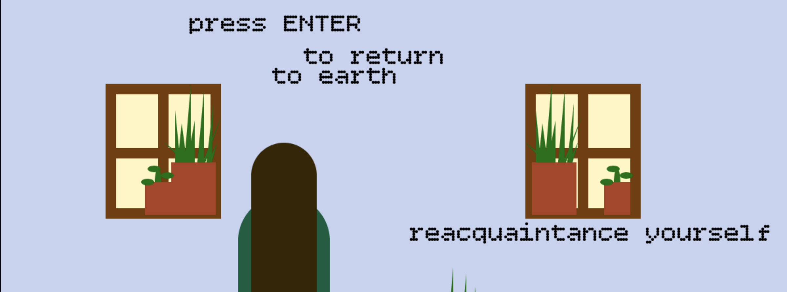
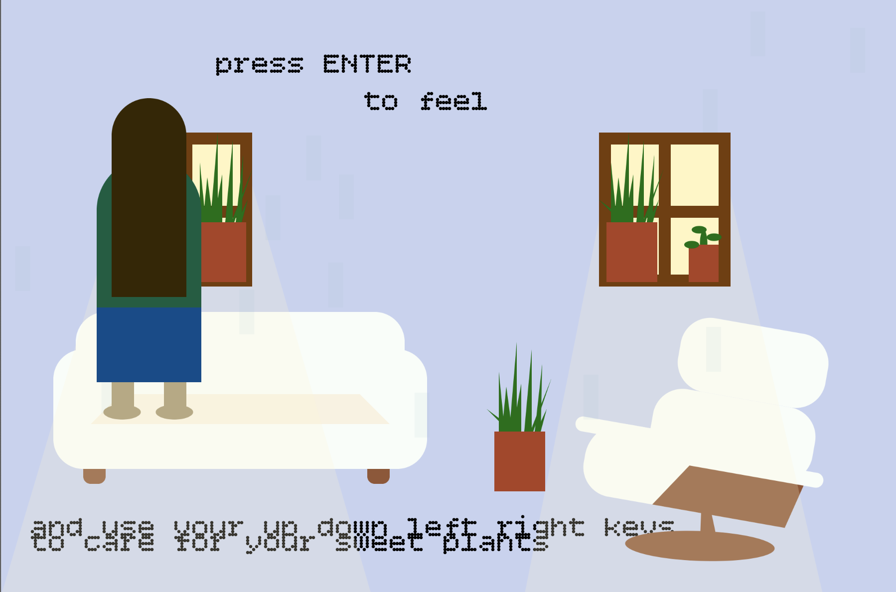

Autobiographical Bitmap Game
Autobiographical Bitmap Game
2021
The above game is interactive. Please note that this game may be easier to interact with if you open the full preview in a new window. You can do so by clicking "link to code", pressing "play" or using Cmd + ENTER on your keyboard, and clicking on the game. Once you're there, feel free to use your arrow keys, the "ENTER" key, and your eyes to interact with the piece.
This project prompted us to design and code an interactive game that communicated certain autobiographical information. As has been a recent obsession, I wanted to represent my unique experience of mental health, methods of care, and coping mechanisms of the pandemic. This project was created for Critical Computation at Parsons during the Fall 2021 semester, under the instruction of Xin Xin and Katherine Moriwaki, and showcases skills in p5.js.
My bitmap game surrounds plants, emotion, and mutual care. My main character exists in their apartment, walking around, reorganizing, and taking care of their plants. The idea for this game stemmed again from personal experience. I wanted this game to be in conversation with my experimental clock; the hair grows by the second, similar to that project. It provides additional commentary on the passage of time and the loneliness and listlessness of pandemic life in juxtaposition with the expectation for continuous advancement in career, social status, etc., despite the massive crisis happening outside of our doors.
The intention, however, was not for this game to be only cynical or critical. My hope is that this sketch can provide a model for what pause looks like, and what can come of leaning into uncomfortable emotions in your own home. In this sketch, I represent small acts that make a large impact. The viewer or player is transported into a world that provides the option for contemplation, and prioritizes small acts of care and maintenance.
 I was incredibly inspired by both Dys4ia (2012) by Anna Anthropy as well as an exhibit by Wong Ping I saw at the New Museum in September 2021, Your Silent Neighbor. I wanted to embody the same saturation of experience, dramatic color, and narrative communication in my own project.
I was incredibly inspired by both Dys4ia (2012) by Anna Anthropy as well as an exhibit by Wong Ping I saw at the New Museum in September 2021, Your Silent Neighbor. I wanted to embody the same saturation of experience, dramatic color, and narrative communication in my own project.
As for future directions of this game, I would like to add different immersive "levels" that showcase different areas of the psyche, and different moments of mental distress, joy, and acceptance. I would also like to add narrative detail to the relationship of the figure and the plants within the apartment.